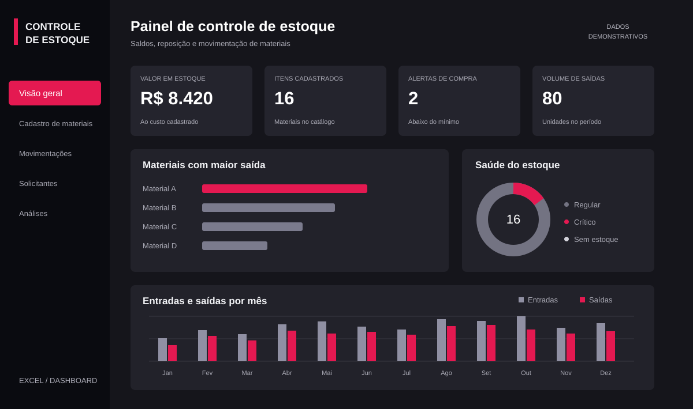

Cadastro de materiais
Código, produto, localização, fornecedor, unidade, custo e estoque mínimo.
01 / EXCEL & GESTÃO
Cadastro, movimentações e indicadores em uma solução de gestão em Excel.

Transformar registros de materiais em uma visão organizada do estoque: o que entrou, o que saiu e o que precisa de reposição.
O projeto conecta cinco abas: Dashboard, Cadastro, Movimentações, Solicitantes e Análises. Fórmulas cruzam os cadastros com os lançamentos para calcular saldos, valores e alertas.
A organização dos dados e as validações são tão importantes quanto o painel. O projeto evidencia o uso de referências estruturadas, cálculos condicionais e gráficos para apresentar uma rotina operacional.
POR DENTRO DO PROJETO
Código, produto, localização, fornecedor, unidade, custo e estoque mínimo.
Registro das movimentações, com preenchimento automático de informações dos materiais.
Cálculo de estoque atual, valor em estoque e indicação de itens críticos ou sem estoque.
Verificação de códigos duplicados e lançamentos incompletos antes dos cálculos.
Patrimônio, materiais cadastrados, alertas de compra e volume de saídas.
Comparativo mensal, materiais com maior saída e situação do estoque.
EXPERIMENTE A LÓGICA
Altere os valores para visualizar a lógica de saldo e reposição usada no projeto.
Simulação no navegador com dados fictícios. O projeto original foi desenvolvido em Excel.